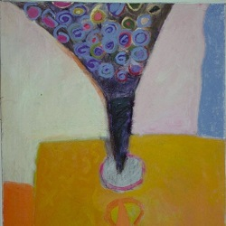
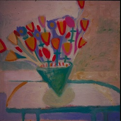
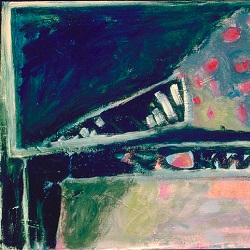
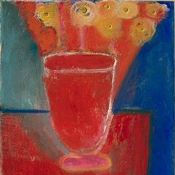

Essay
Bill Schuetz
Someone once said that Beethoven’s Pastoral Symphony is not about shepherds; it’s about the key of F Major. That is a very narrow truth, but one which is relevant to a review of Martha Ward’s artistic output.Works of language imply meaning; works of music imply time and intensity; works of paint imply substance, texture, physicality, space–though they may, as well, offer symbolism or suggest narrative. Paint itself is substance, and in this century, many of us have liked it especially when it was uneven, serrated, granular, brushy.
At the very least, we can say that Martha Ward’s paintings are not about flowers, fruit, or food — or mountains, plains, rivers — or even about light, — though we do find all these things in her work.
If 16th and 17th century still lifes are concerned with volumes and color and shading, Ward’s paintings tend to focus on motion and gesture. There is no stillness in her still lifes, no thereness in her landscapes. They may be physical, but if so, they are about the physics of motion. I prefer to think, however, that they are about the mind in motion.

In Two vases of flowers which dates to 1989, two monumental vases of flowers, standing before a turbulent background, seem to be exciting each other. The flowers themselves are not connected to stems; several of them seem to be either arriving or leaving. Every blossom has a flat center and a fierce, swirling perimeter. These are not halos; they’re more like vortexes. The bouquet (now that’s a word that hardly applies to forms this fierce!) on the left is exploding, while the constellation on the right contains several blooms which seem either to be pairing or splitting. Of twenty-one flowers in the right vase, nineteen have smoky gray exteriors, while all the color of the ensemble has been focused on two corollas and some of the space between them.
Magpies posing as flowers, was the phrase that came to me. Someone added that people put piepans on trees to scare off the crows. Ward would have been amused at these reactions; she would have been interested; but she would not have seen a connection with her paintings. They are really not about external objects. If they are about anything, they are about her. Mostly, Martha Ward eschews symbol and story. Mostly, but as we will see, not always.
In the shadows of the upper right corner of this painting, blue-green brushstrokes, a reminder of shadows which the flowers would have cast on the wall, swirl freely in a series of variations which surprise us both for their unity and their diversity. Painting which looks this extemporized should, we feel, fall apart on closer scrutiny. Instead, the more we study this work, the more organization we see. Order balanced with chaos; De Kooning would have approved.
But look again. It’s hard to make sense of the scribbling in the foreground. It bears none of the variations of the wall behind the flowers. There’s a wanton messiness to it. The most we can say of it, for now, is that it seems to be a series of vigorous, tonally-constricted improvisations.
Motion, variation, metamorphosis: These are the things Martha Ward’s paintings exemplify. To one degree or another, many artists have wanted their works to be reminiscent of the process through which they were created. There can be no doubt that Ward’s paintings belong in this category; we find footprints all through the garden. John Ruskin said, “I believe the right question to ask, respecting all ornament, is simply this: Was it done with enjoyment–was the carver happy while he was about it?” Martha Ward was, and she left, always, a record of the doing.
To be fair, in a few of the California paintings her brush comes nearly to a stop. “The hill becomes the valley and is still,” as Roethke said. Now and then, the brushstrokes seem almost to be running in place.

{kind=link}
But even there, the variation of form and gesture is tireless. Here’s an example from the show: In the still life Blue vase, we find a brief shadow to the left of the vase, and a livid reflection in the foreground, mostly orange. The flowers in the fanlike bouquet are blue, red, gold, and dark, greenish black: They preside over the usual assembly of table, wall, window, floor. The left edge of the window wavers like images seen through two hundred year-old glass.
These fanning flowers are a motif which began to occupy Ward in the late eighties. March Ard, a lifelong friend of Ms. Ward, explains this “delta” of colors as a movie coming out of a projector. And that is a metaphor coming out of a painting which does not seem to mean anything.
It may be fair to say that Ward’s paintings aren’t a way of seeing; they’re a way of being.
In every painting an objective reality is reduced to an abstraction, and in the midst of every abstraction, certain forms are perpetuated through variation. In the background and the foreground the artist, particularly in the middle and late paintings, busies herself with the most unexpected, vigorous brushstrokes. They seem to break any spell the painting might otherwise have been ready to weave. Martha Ward is contrary and her garden never grows straight. And she insists on being always present to us by means of those messy paint strokes. They are performance art in a sense, the record of a dancer’s feet.
So here is what we might see in any of Ward’s paintings:
We see a basic, representational subject, one that is usually repeated in many guises from painting to painting; in other words, an obsession. The work can usefully be divided into such categories as: landscapes, cypresses, trees with bare branches, nudes pictured from the waist to the neck, still lifes with fruit, still lifes with flowers, beach umbrellas. Sometimes these images achieve the quality of icons because of their bold simplicity and their constant repetition.
The subject will be energetically and willfully distorted. Details in the painting will correspond, only very loosely, to the forms in the original subject.
There will be a play of variation on one or two elemental forms, variations on, for instance: a basic flower form; flower shadows on a wall; vertical, pointed ovals which represent cypress trees; simple patterns found on fabric; elementary fruit forms.
The background or foreground areas may be divided into several differently-colored panels which often afford spaces for “free-style skating” on thin ice.
One further observation on Ward’s work as a whole. The distance of the viewer matters very much. Up close, we see a vibrant, sometimes violent canvas. Everything is awry. From a distance we see restless but determined, powerful forms in a precarious balance. The first time I saw a group of Ward’s paintings from a distance was a revelation. It was, I regret, at her memorial service in November 1997. The Auburn, Alabama Unitarian Meeting House was filled with her paintings, and many of us were stunned by this collection of images on which we could finally gain a perspective.


The earliest of Ward’s paintings of which we have a photographic record come from Tempe, Arizona in the late 1970s. At this time she was experimenting with a variety of styles, including some nonobjective work, such as Phoenix, reminiscent of Klee’s geometric landscape paintings (Monument im Fruchtland, 1929). Ward’s interest in human figures also began at this time and is exemplified in Silhouetted figures and Silhouetted figure with plants.
Very soon thereafter, she was painting abstract fruit and plant forms in rich, somber colors. In the early 1980s these works verged on the nonobjective. By 1984, while living in Norman, Oklahoma, she was creating dark, expressionistic landscapes. Although there is a cursory resemblance between some of these pictures and the work of Dutch painter De Stael, Ward’s paintings are much more restless. They remind us both of the work of the abstract expressionists and of the early 20th Century German expressionist, Ludwig Meidner. Ward remarked to friends at the time that she was especially interested in contemporary German expressionism. As a counterpoint to these austere landscapes, she painted a small series featuring schools of tropical fish against dark backgrounds. These works, too, have a strong expressionist quality.
Toward the end of 1994, Ms. Ward visited Calgary, Alberta with her husband, Jerome. She was very impressed with the skies she saw in Montana on the way back. Several fierce, watercolor landscapes emerged from this trip. The palette is lighter here, and the spaces are almost entirely filled with stormy skies. These works are no less intense than the previous landscapes, but they are less brooding.
In 1985, the Wards moved to Davis, California. The change in environment seemed to prompt a powerful change in style for Ward. She did not entirely forsake landscape painting (a large series featuring cedar trees was created during this period), but she focused intently on still life. The work took on a new sensuality. Vases of flowers and bowls of fruit predominate, sometimes with prominent elements of interior scenes. The palette itself brings to mind the representational work of Diebenkorn as well as David Park and Hockney.
Ms. Ward was invited to join a cooperative gallery where she sold paintings almost as fast as she could produce them. But there is nothing commercial looking about these works; they are brushy, typically messy, full of dissonance. She said in a newspaper interview that she wanted her paintings to be “comforting,” for them to fit well in people’s homes. The forms, however, are often raucous and unkempt. There are even truncated female nude torsos starting at the waist and ending at the chin.
The California years were extraordinarily fruitful. As easy as she found it to please her public, Ward experimented tirelessly. In every one of these years she found new forms, new modalities, new approaches to variation. The startling sensuality of the mid-eighties waned. By 1989, color was less a preoccupation, variation more. Movement was now supreme. The extraordinary painting Two vases of flowers described at the beginning of this essay comes from that period. There are complex and puzzling landscapes with bare trees whose branches Ward used as frames for designs; vases filled with pale “spirit flowers,” compositions where the weight of two or three powerful flowers seems too much for the rickety tables which support them. Ward’s still lifes seem to be reaching toward simplicity and singularity, although their forms become even less conventional.
After being diagnosed with liver cancer in 1990, Ward moved with her family to Auburn, Alabama, the town of her childhood. The last seven years of her life represent both a summing up and a re-examination of the earlier work. These pieces are more concentrated, more economical, less showy. Often they’re enigmatic. Earlier compositions are reconsidered in an entirely new light. A painting might render just four anchovies on a small table. a bouquet of flowers lying on its side in a darkened room, a chalice-shaped vase with a bare quorum of flowers materialized in not quite the right place. Many works seem related to death.

This is not to say that the late work is never playful. There is plenty of whimsy in Golden anchovies, and another painting includes a cat and a fishbowl. The vase of flowers lying flat on the table contains an abundance of nervous energy and, beneath the table, a stew of free-floating colors.
But Ward is mostly aware that she is running out of time. We can observe a kind of retreat to simplicity. It may be that she is concentrating on drawing complexity out of that simplicity. The most humble objects, even paintbrushes, may appear monumental in these pictures.
At times, especially with the sunflowers and the vases which look like chalices, the images seem startlingly “spiritual.” Ward herself strenuously denied any religious, mystical, or occult preoccupations in the last months of her life. Philosophically, she was strictly a materialist-reductionist, and she had the courage of her convictions.
But we have here before us a summary of her life on canvas. There is a happy voltage surging through these works, an almost biological certainty. What she knew went beyond her quite significant abilities in argument and sometimes contradicted them. Whether or not we agree with her views on life and death, we can see in these works that Martha Ward is not yet finished with us.
The following descriptions refer to selected pieces in the galleries..
Silhouetted figures. Dated approximately 1979, this painting shows one of several styles with which Ward experimented at the beginning of her career. The work depicts her grandmother at her dressing table. Why there are two forms in the mirror is not clear. These simplified figures remind us of two artists of significance, Milton Avery and the German, Oskar Schlemmer. Probably Ward knew Avery’s work; we don’t know whether she had seen Schlemmer’s. At this stage, the brushstrokes are neither a formal nor an expressive element. The whole design is geometric. There’s an almost classical sense of harmony and balance here which we will not see in many of the mature works.
Silhouetted figure with plants. This picture may have been painted slightly after Silhouetted figures. There’s a simplified human figure here, but that figure is completely subordinate to the work’s abstract design. It’s as though the singer of an art song is sitting in the middle of the orchestra. Plant forms, one of Ward’s major preoccupations, are already present. The plant to the left is growing from a form which reminds us of a man’s head of hair from the three quarter view, but there is no face beneath.

Prussian blue landscape. This is a “landmark” in Ward’s early landscapes. It is both cogent and spontaneous. De Stael may be a precursor, along with Manessier and Bazaine, two so-called lyrical abstractionists. The most striking aspect of the painting is a blue and white diagonal line which horizontally bisects the dark forms at the center. The composition works more or less as a reflection, although the elements of the foreground are in retrograde from those in the background. There may be the rudiments of a forest in the center right, but most of the other colors are blues and blacks. A few red and white objects remind us of boats, so perhaps we are at a marina. The stormy sky is an argument between blues, gray blues, and violet blues. This is a work of dramatic contrasts contained in large, bold forms. We remember Motherwell and Kline.

Montana Cloudscape No.1. The painter created several Montana Cloudscapes. in this vein. Although she always painted from real subjects, this is one of those rare instances when Ward seems to be trying to communicate what she saw and felt as she looked at nature. We have an impression of great height, of sun rays making their way down through the clouds in roaring cascades. There is considerable energy in the green foreground, as well. The colors are subjective and spontaneous.

Flower vase on table No.1. This is a relatively early still life, a vase of furry yellow flowers; the spaces on the round table below are divided by the vase. On the left, the table surface looks like a white peacock’s tail; on the right it looks like an egg yoke filled with shooting sperm. The contrasting dashes of paint we see on the table appear also in the flowers.

Reflected bowl of fruit. Ward is at the height of her early California sensuality. We are confronted with shapely juxtapositions of light and dark blues, violets, lavenders, bright yellows, brilliant light greens and deep orange, together with bravura scribbles of black lines. This is a painting of great coloristic vitality, and it causes us to imagine how commercially successful the artist might have been had she decided to continue making “likable” pictures.

Fishbowl and fruit. A work of prodigious energy, this still life shows Ward at the threshold of her middle style. What is unusual about this picture is the variety of forms and the explosive quality of the composition. The prominent inverted triangle is evidently a fish bowl. Behind is a table with white tablecloth and a bowl of fruit. Behind these objects is a white rectangle which may be a window with blinds. The application of paint is expressive and spirited. It reminds us of the impassioned brushwork of Lovis Corinth. Several bright white drops of paint appear to have been carelessly dripped around the painting. They manage to enhance the improvisational style.

Two cypress trees. In this an abstract representation of two cedar trees, the muddy black earth extends to a horizon one third of the way up the canvas. The cedars branch somewhat above this level. We have a faint, pale green suggestion of trees (willows?) in the deep background. There is a brilliant, magenta sunset next to the left tree. The trees’ shadows have a geometric quality, as does the whole painting. There seems to be a dark evergreen tree growing in the center, bordering the cedar on the right.

Table with fruit bowl No. 3. Vertical blinds or wood paneling behind a table with a bowl of fruit provide a pretense for a study of two narrow but contrasting spectrums of color shifting toward the center from right and left. The table has almost been painted out of the picture. The delicate purples in the fruit bowl do not belong to horticulture, but they are very much at home in this radiantly domestic painting.

{kind=link}
Triangular vase No.2 [tulips]. This relatively relaxed composition dates from 1988. The wall behind the flowers has been divided into several distinct segments. We see, on the bottom, the four blue-green legs of the table. We also see what appear to be rather wavy shadows of those legs, rendered in gold. Surprisingly, there are six of these. The spaces between the various elements of the painting are rather arbitrarily subdivided and colored. A number of 20th century painters have made some use of this approach, but by 1988, Ward is using it compulsively.
The flowers themselves may be tulips–they’re uncommonly disciplined to be in one of Ward’s paintings. As in many of the later works, the vase comes to a point at the bottom, and there’s a pale, differently-colored circle of paint at the base. In the background on the right are a number of shadowy, circular forms which may indeed be shadows. Compared to the flower shadows in the later middle paintings, they are rather listless.
Vase with torso. This startling picture presents forms and colors as intense as those of Emil Nolde. A green, nude, female torso, shown from abdomen to shoulders, poses in front of an orange table with an empty piece of pottery. There is a rose background on the left, greenish black on the right, and brief scrawls of other colors against those backgrounds. The reds and oranges have the quality of molten lava.

{kind=link}
Bouquet lying on table. This horizontal bouquet of flowers was mentioned in the main discussion. The room appears to be dark, with only a faint play of light on the walls. The flowers are identified, located, but hardly described–except that they are red or pink. The play of pastel colors beneath the dark table is lively, free, and encroached only slightly by the greenish black daubs on the left. The ornamental edge of the table provides some of the most dramatic elements of the entire painting: A pale blue, eye-shaped hole affords barely enough space for a pink rose petal. To the right is a black zigzag surrounded by blues and pinks. This table is alive.
The wrapping at the base of the bouquet is mostly black, but it contains, barely contains, a number of powerful white paint strokes. The table surface, which extends to the top of the picture, is rimmed in milky white. Ward has transformed this feature, however, by connecting it to the white outline around the wrapping of the bouquet. The result is an energetic, angular spiral which frames most of the canvas and energizes the composition.
Golden anchovies. A single line, changing colors several times, moves up and down and across the table, outlining one anchovy after another; the tails of the fish barely touch. If we hold the painting upside down, we can almost mistake the spaces between the fish for the creatures themselves. In terms of composition, we might be looking at Paul Klee’s 1938 “Heroic Strokes of the Bow” (Heroische Bogenstriche), turned on its side. We are reminded also of Escher. Ward was, in fact, interested in Escher during the mid-eighties.

Ecuadorian village, Andes. The paintings inspired by Ward’s visit to Ecuador in 1994 confront new compositional problems; there are strong horizontal elements to these pictures, and bold, undulating outlines of mountains. These mountains are pure music; we might say they wear their snow lightly. The houses in the foreground are strangely isolated within their own picture frames. They could represent displays for tourists at third world airports. Rows of crops, the real stuff of this world, appear at the edges or the middle distance. Thus, the painting is a play of multiple levels.

Gladiolas. Ward’s black gladiolas are a combination of the fecund and the forlorn. Perhaps this is appropriate for a flower whose lower blossoms rot before its higher blooms have opened. The forms themselves are anything but wilting. They loom before the viewer; from their common source at the upper left, they rush toward us. At the bottom of the picture, the spaces between the gladiolas are strikingly individuated; each panel is different from the others. If we blink and look again, we may see torrents of white, running between the dark stems.
One of the marvels of this painting is the bold arc of paint at the left edge of the pale green table. This line is less a table’s edge than a demarcating gesture. There is an echo of it in the upper right.

Finally, in the last set of paintings, a kind of transformation takes place. Ward’s sunflowers look like haloed heads. Gold sunflowers, blue table, contains two radiant flowers with pointillistic daubs of yellow paint. Curiously, the yellow daubs are to be found on the stems as well as the flowers. Other smaller dots appear on the table next to the vase. To the right of the second flower is only the stem of a third flower.

Sunflower, blue square. This is a simpler composition than the previous piece, and it contains some poignant suggestions of absence. There are now just two vases, and, as in the previous picture, only the stem of the flower on the right can be seen. While the vase on the left is as red as a healthy corpuscle, the vase on the right is grayish white, and its outline, including the outline of the opening at the top, is painted in the same light blue as the table background. This vase is about to disappear

{kind=link}
Red bouquet in vase. This highly charged still life features a red vase with yellow flowers, was painted in the last year of the artist’s life. The paint is gritty and has been applied roughly. Except for a gray shadow, the table is painted in the same intense red tones as the vase, which is shaped like a chalice. The ghostly stems reaching up to the flowers do not begin inside the vase. They have materialized just above it. To make it clear that the flowers are really present, the artist has imprinted a thick yellow circle of paint, raised on the edges and low in the center, inside each one. The shadow of the vase and flowers is a reddish orange, almost the color of fire. The wall on the left is a pale, bluish gray. But the wall on the right, the last thing we see, uncharacteristically continuous from the top of the painting to the bottom, is a deep, twilight blue.